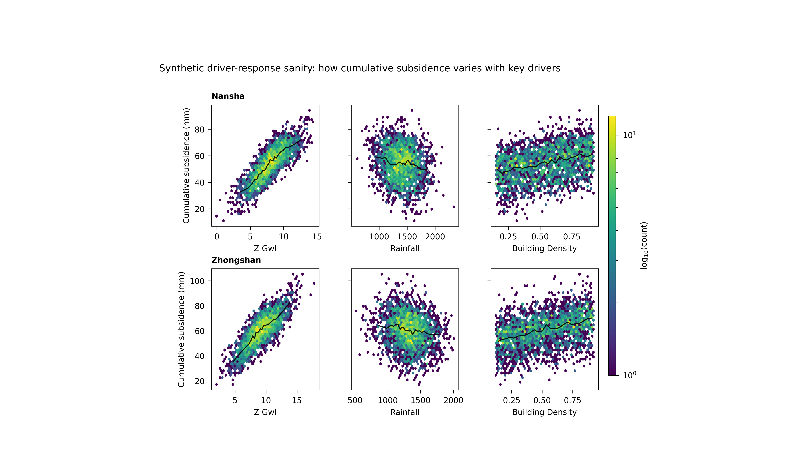

Note
Go to the end to download the full example code.
Driver-response plots: learning how the response moves with the drivers#
This example teaches you how to read the GeoPrior driver-response figure.
Most figures in this documentation show maps, metrics, or physics diagnostics. This one asks a simpler but very important question:
How does the response variable behave as each driver changes?
That sounds simple, but it is often one of the fastest ways to see whether a model workflow is scientifically plausible.
Instead of looking at space first, we look at pairwise relationships:
one driver on the x-axis,
one response on the y-axis,
and one panel for each city-driver pair.
What the figure shows#
The plotting backend builds a grid with:
one row per city,
one column per driver,
a hexbin density view in each panel,
and an optional robust trend line.
This is useful because raw scatter plots often become too dense to read. A hexbin panel shows where data are concentrated, while the trend line gives a compact summary of the central relationship.
Why this matters#
A forecasting workflow can produce good aggregate metrics while still hiding unrealistic driver-response behaviour.
This figure helps answer questions like:
Does subsidence rise where drawdown deepens?
Does the relationship look monotonic or nonlinear?
Do the two cities show similar behaviour?
Is one driver clearly stronger than another?
The real script supports custom driver lists, custom response columns, city filtering, year filtering, optional subsampling, trend overlays, and several y-axis sharing modes. This gallery page uses a compact synthetic dataset so the lesson is fully executable during the documentation build.
Imports#
We use the real plotting backend from the project script, so this example teaches the actual function used by the CLI.
from __future__ import annotations
import tempfile
from pathlib import Path
import matplotlib.image as mpimg
import matplotlib.pyplot as plt
import numpy as np
import pandas as pd
from geoprior._scripts.plot_driver_response import (
plot_driver_response,
)
Step 1 - Build a synthetic driver-response dataset#
The real plotting function expects a table with:
a
citycolumn,one or more numeric driver columns,
one numeric response column.
For a teaching page, we want relationships that are easy to read:
a groundwater-related driver with a strong positive response,
a rainfall driver with a gentler compensating effect,
an urban-load driver with a moderate positive effect.
We build two synthetic cities with slightly different response shapes so the reader can compare them.
rng = np.random.default_rng(7)
n_city = 2600
def make_city_df(
city: str,
*,
z_shift: float,
rain_shift: float,
dens_shift: float,
noise: float,
) -> pd.DataFrame:
z_gwl = rng.normal(
loc=8.0 + z_shift,
scale=2.2,
size=n_city,
)
rainfall = rng.normal(
loc=1400.0 + rain_shift,
scale=230.0,
size=n_city,
)
building_density = rng.uniform(
0.15 + dens_shift,
0.92,
size=n_city,
)
# Response: cumulative subsidence [mm]
#
# We make the response:
# - increase with deeper groundwater drawdown,
# - decrease slightly with rainfall,
# - increase with building density,
# - and keep some nonlinear structure.
subsidence_cum = (
18.0
+ 4.8 * z_gwl
- 0.010 * rainfall
+ 21.0 * building_density
+ 2.0 * np.sin(0.9 * z_gwl)
+ rng.normal(0.0, noise, size=n_city)
)
return pd.DataFrame(
{
"city": city,
"z_gwl": z_gwl,
"rainfall": rainfall,
"building_density": building_density,
"subsidence_cum": subsidence_cum,
}
)
df = pd.concat(
[
make_city_df(
"Nansha",
z_shift=0.0,
rain_shift=0.0,
dens_shift=0.00,
noise=4.5,
),
make_city_df(
"Zhongshan",
z_shift=1.2,
rain_shift=-80.0,
dens_shift=-0.03,
noise=5.2,
),
],
ignore_index=True,
)
print(df.head().to_string(index=False))
city z_gwl rainfall building_density subsidence_cum
Nansha 8.002706 1540.312860 0.882974 59.357233
Nansha 8.657240 1547.013481 0.785073 59.412311
Nansha 7.396897 1118.141519 0.638460 49.703435
Nansha 6.040698 1326.046221 0.684160 40.861215
Nansha 6.999724 1432.394747 0.746683 48.815763
Step 2 - Choose the teaching drivers#
The plotting function accepts a list of driver column names. Here we choose three drivers that create visually distinct relationships:
z_gwl: strongest positive trendrainfall: weaker negative trendbuilding_density: moderate positive trend
drivers = [
"z_gwl",
"rainfall",
"building_density",
]
Step 3 - Render the real figure#
The backend uses hexbin panels with logarithmic count coloring. We also enable the robust trend line, which is computed from binned medians. This is especially useful when the cloud is broad and a raw linear fit would be misleading.
tmp_dir = Path(
tempfile.mkdtemp(prefix="gp_sg_driver_resp_")
)
out_base = str(
tmp_dir / "driver_response_gallery"
)
plot_driver_response(
df,
cities=["Nansha", "Zhongshan"],
drivers=drivers,
ycol="subsidence_cum",
sharey="row",
out=out_base,
gridsize=42,
vmin=1,
trend=True,
trend_bins=24,
trend_min_n=18,
show_legend=True,
show_labels=True,
show_ticklabels=True,
show_title=True,
show_panel_titles=True,
title=(
"Synthetic driver-response sanity: "
"how cumulative subsidence varies with key drivers"
),
)
[OK] wrote C:\Users\Daniel\AppData\Local\Temp\gp_sg_driver_resp_6pwlk7vc\driver_response_gallery.png/.svg
Step 4 - Display the saved figure inside the gallery page#
The plotting function writes PNG and SVG outputs, then closes the figure. We reload the PNG so Sphinx-Gallery shows the real result directly on the page.
img = mpimg.imread(tmp_dir / "driver_response_gallery.png")
fig, ax = plt.subplots(figsize=(8.6, 5.2))
ax.imshow(img)
ax.axis("off")

(np.float64(-0.5), np.float64(4237.5), np.float64(3088.5), np.float64(-0.5))
Step 5 - Inspect the relationships numerically#
A visual plot is useful, but a teaching page becomes stronger when it also shows a small quantitative summary.
Here we compute simple rank correlations for each city-driver pair. The exact plotting backend does not require this step, but it helps connect visual trends to a numeric intuition.
summary_rows: list[dict[str, float | str]] = []
for city, sub in df.groupby("city", sort=True):
for d in drivers:
rho = sub[d].corr(
sub["subsidence_cum"],
method="spearman",
)
summary_rows.append(
{
"city": city,
"driver": d,
"spearman_rho": float(rho),
}
)
summary = pd.DataFrame(summary_rows)
print(summary.to_string(index=False))
city driver spearman_rho
Nansha z_gwl 0.830279
Nansha rainfall -0.144919
Nansha building_density 0.340887
Zhongshan z_gwl 0.784472
Zhongshan rainfall -0.190253
Zhongshan building_density 0.402052
Step 6 - Learn how to read one panel#
Each panel should be read in two layers.
First layer: density#
The hexagons show where observations are concentrated. Darker or denser zones tell you where the bulk of the dataset lives. This prevents a few isolated points from dominating your interpretation.
Second layer: robust trend#
The black line is a robust trend built from binned medians. This is useful because it captures the central directional relationship without assuming a strict linear form.
Together, these two layers answer:
where are most samples?
what is the central trend?
is the relationship straight, curved, weak, or strong?
Step 7 - Compare the drivers#
Now let us interpret the synthetic example.
z_gwl#
This is the strongest driver in the lesson. Its panels should show the clearest positive rise in cumulative subsidence.
rainfall#
This relationship is weaker and slightly negative. In a real hydrogeological setting, stronger recharge can partially reduce the conditions associated with subsidence, though the exact interpretation depends on data conventions and lag structure.
building_density#
This is a slower structural driver. Its response tends to be smoother and more monotonic in the synthetic example.
Why city-to-city comparison matters#
Because the figure is arranged by city, the user can quickly ask whether the same driver behaves similarly in both places. That is one of the main strengths of this figure.
Step 9 - Practical takeaway#
This figure is best used as a sanity-check and interpretation tool.
It helps you verify that the learned or observed response behaves plausibly with respect to key drivers before you move on to more elaborate spatial or physics interpretation.
In practice, it is especially good for:
spotting obviously implausible relationships,
comparing driver influence across cities,
and communicating directional behaviour in a compact, visually intuitive way.
Command-line version#
The same figure can be produced from the CLI.
The real script supports:
--srcas a required CSV file or directory,--filewhen--srcis a directory with one combined CSV,--ns-fileand--zh-filefor per-city files,city flags through the shared city selector,
--yearfiltering,optional
--sample-fracand--sample-n,--driversas a comma list,--response(alias--col),--subs-kindto choosesubsidence_cumorsubsidencewhen--responseis omitted,--shareywithnone,row, orall,and the plotting controls for trend, gridsize, and labels.
Legacy dispatcher:
python -m scripts plot-driver-response \
--src results/combined_driver_table.csv \
--drivers z_gwl,rainfall,building_density \
--response subsidence_cum \
--sharey row \
--gridsize 60 \
--trend true \
--trend-bins 30 \
--trend-min-n 20 \
--show-title true \
--show-panel-titles true \
--out figS2_driver_response
Directory-based use:
python -m scripts plot-driver-response \
--src results/driver_tables \
--ns-file nansha_final_main_std.harmonized.csv \
--zh-file zhongshan_final_main_std.harmonized.csv \
--drivers z_gwl,rainfall,building_density \
--subs-kind cum \
--sharey all \
--out figS2_driver_response
Modern CLI:
geoprior plot driver-response \
--src results/combined_driver_table.csv \
--drivers z_gwl,rainfall,building_density \
--response subsidence_cum \
--out figS2_driver_response
The gallery page teaches the figure. The command line reproduces it in a workflow.
Total running time of the script: (0 minutes 13.305 seconds)